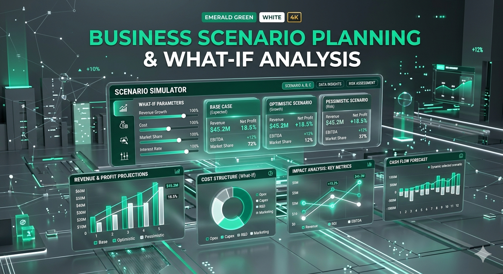

Маркетинг — этосигнал, который читают.
Marklytics — командный пункт аналитика соцсетей. Мы переводим миллиарды impressions, кликов и конверсий в один читаемый пульс кампании. Холодная власть данных. Тёплая интуиция стратега.
Impressions. ROAS. Решение.
За последние 18 месяцев мы прогнали через нашу методологию 48 кампаний в пяти соцсетях. Ниже — общий счёт, который читает Marklytics в реальном времени.
AI Визуализации
Концептуальные образы data warroom. Сгенерировано в Google Gemini · Nano Banana. Премиум-эстетика тёмного штаба с холодным неоном данных.




Что читает Marklytics
Эффективность маркетинговой кампании в соцсетях — это не одна цифра, а четыре пульса. Охват измеряет масштаб, CTR — релевантность креатива, конверсия — желание купить, ROAS — финансовый смысл всего этого. Marklytics ведёт каждый пульс отдельно и сводит их в один сигнал: «двигай бюджет сюда».